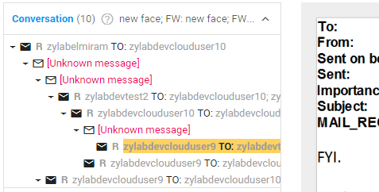

Note: Using queries efficiently can yield great results, but building effective queries can take time and practice. It is not recommended to use queries as the only means to search for evidence.
Different search methods are available to search your data set, which usually contains documents in many different forms. Not only the text in these documents, but also the information about these documents (the metadata) can and should be searched.
The Browse method enables you to search just by selecting (parts of) a facet (pie chart). The Timeline allows you to search documents within a specific time frame. All other search methods listed below (Keyword Search, Search within a document, Keyword Highlighting, Batch Search and Search Email) use the query language as explained in the ZyLAB ONE Search Language Guide. Of course, you also search for documents when you use Assisted Review to identify responsive documents.
Search within a Document
In Document View, press Ctrl+F to search within a document.
Hits are highlighted in pink.
The different search highlighting colors as displayed in Document View (yellow for Keyword Search, custom selected color for Keyword Highlighting, and pink for Search within a Document):
Explore documents from global searches. If you do not know yet what you are looking for exactly, you can, for example, explore by custodian and obtain an overview of all documents of that custodian. In addition, facets (pie charts) will help the reviewer to create a mental picture of all the work that needs to be done, and to estimathe time needed to complete the review.
Search for one or more words within a data set. Keyword searches are prone to produce over- and under-inclusive results. Nevertheless, keyword searches are used in many ways. Use search language techniques to improve your result set.
Select the Search + Query Builder buttons in the top left corner and use Fields to search the metadata, Tags
to search all assigned tags and/or Review Status to search documents that have (not) been reviewed.
Use the following query to search for email addresses:
*@?+.*
When necessary add an exclusion list with commonly used files extensions to decrease the amount of false hits (e.g. so files with an @ in the name won't be found):
Email is often the best resource for establishing a timeline of communications. In addition, email can be an especially valuable source of evidence in civil or criminal litigation, because people are often less careful in these exchanges than in hard copy correspondence such as written memos and postal letters.
It is recommended to create review batches so all emails in an email thread are assigned to one person (similar to families). When a reviewer opens an email in Document View, the email thread will be shown in the Conversation panel (on the left side of the screen).

An email thread makes it easier to understand the overall structure of a conversation and to make faster and more consistent tagging decisions. An email or conversation thread is an email message and a list of all of the subsequent replies related to the original email. The messages are visually grouped and organized in chronological order. Threads are dynamically built when email messages are processed by ZyLAB Legal Processing. When a new message is processed, it will be put in the right place of the thread it belongs to. It is also possible to search for specific emails and email addresses using keyword search.